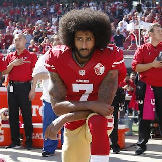
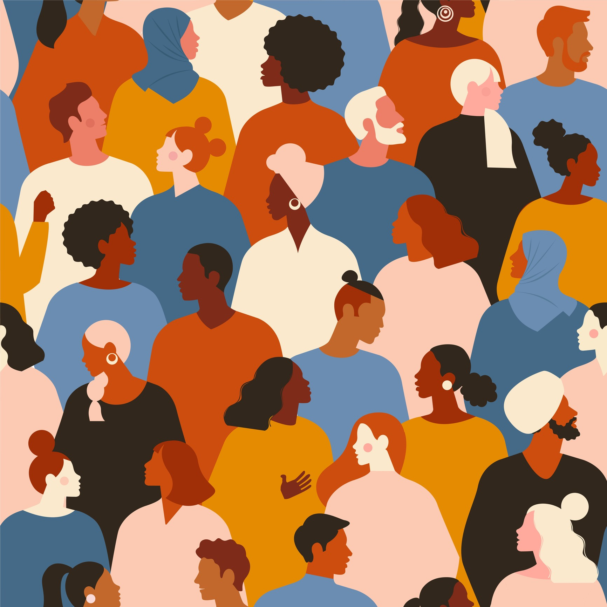

Discrimination: “the unjust or prejudicial treatment of different categories of people or things, especially on the grounds of race, age, or sex.”
Discrimination with in race has been around in this country for the longest.
Even though many would like to think things have gotten better throughout this country with racism and discrimination. Looking how the past two years has gone in America, shown that there is still a lot of discrimination and racism in this country.
Discrimination can be shown in many ways. In this paper I will be describing the different theories of discrimination: employer discrimination, coworker/ employee discrimination, and consumer discrimination and how it relates to African American athletes in the U.S.
Descrimination Against Athletes
Becker’s model shows discrimination by employers, employees, and consumers. In each of these ways of discrimination, Becker uses money to measure the intensity of them. With employer discrimination the employers are willing to take a hit in profit to avoid hiring a group of people. “For example, an employer may be willing to sacrifice profits to avoid associating with a group of people that reduces his or her utility.” (Allmen; 2013, p.327)
This can be related to the Kaepernick situation which is happening today. Kaepernick a black man who decided to stand up against police brutality against blacks by taking a knee during the National Anthem. He has been black balled by the owners of the NFL for doing so. This is a perfect example of employer discrimination because owners are willing to lose games (sacrifice profit) than to sign a really good player on their team. Even though the NFL owners may not be blatantly discriminating against a group of people but rather just one individual.
It’s the meaning behind blackballing Kaepernick which makes it like they are discriminating a group of people. What I mean by this is Kaepernick is standing up for many innocent blacks in America and instead of understanding this, the owners instead blackballed him out the league because they do not agree with his stance on the situation. Many owners in the league has went to the extent to tell their black players in the league if they decide to take a knee like Kaepernick the same will happen to them. The cowboy’s owner Jerry Jones said, “If there's anything that is disrespectful to the flag, then we will not play.
Understand? If we are disrespecting the flag, then we will not play.” So basically, Jerry Jones and many other owners are willing to sacrifice his profit to keep a group of people down and in check. Discriminating clearly makes the team owner worse off financially, because at the end of the day as an owner you should want your team to win, because a winning team brings in revenue. But if you are discriminating against players who can help you win then you are shooting your own self in the foot. For example, what if every black player on the Cowboy’s decided to take a knee anyways could Jerry Jones really be that stupid to try and suspend every black player on his team to do so?
If so he would lose so much money.

Descrimination In The Workplace
Another theory of discrimination in Becker’s Model is Employee Discrimination. Discrimination is not restricted to just employers. Narrow-minded employees can also discriminate against their work colleagues. For example, back in the 1880s, a few black baseball players played in the major league during this time.
One black player by the name of Moses Fleetwood Walker, who was the first black player in the major leagues played for Toledo in 1884. Many white players refused to play for a team that hired blacks to play, and the whites who decided to play, played grudgingly, and treated the black players like Moses Fleetwood very poorly.
Though Moses was a pretty good player that could hold his on in the league, he was not welcomed. Both opposing players and his teammates gave him a hard time as he played in the league. His teammate Tony Mullane was a pitcher for Toledo back in 1884. The New York Age of January 11, 1919, reported: “Toledo once had a colored
man who was declared by many to be the greatest catcher of the time and greater even than his contemporary, Buck Ewing. Tony Mullane … than whom no pitcher ever had more speed, was pitching for Toledo and he did not like to be the battery partner of a Negro. “He [Walker] was the best catcher I ever worked with, but I disliked a
Negro and whenever I had to pitch to him I used to pitch anything I wanted without looking at his signals. One day he signaled me for a curve and I shot a fast ball at him. He caught it and came down to me. … He said, ‘I’ll catch you without signals, but I won’t catch you if you are going to cross me when I give you signals.’
And all the rest of that season he caught me and caught anything I pitched without knowing what was coming.” He was forced out of the major league after playing 42 games. This is a good example of employee discriminatory, because his own teammates made it harder for him to play the game. Usually the pitcher and the catcher are
supposed to be on the same page, but Mullane hated that he had to play with a black player so much that he would throw random pitches at him. Short term discriminating from a white player point of view makes sense because of course you wouldn’t want black players to come and take the jobs or positions of other white players.
But long term discriminating against black players was worse off financially. By black players joining teams, the teams had more of a chance to winning a championship. Like I said earlier the more a team wins the more money there is for everyone on the team. Back in 1947 the Dodger manager Leo Durocher explained this to his
team when he heard the white players were trying to get Jackie Robinson off the team. “Boys, I hear that some of you don’t want to play with Robinson. Some of you have drawn up a petition. Well you know what you can use that petition for. . . . I’m the manager and I’m paid to win and I’d play an elephant if he could win for me and this fellow Robinson is no elephant.
You can’t throw him out on the bases and you can’t get him out on the plate. This fellow is a great player. He’s gonna win pennants. He’s gonna put money in your pockets and mine. . . . Unless you wake up, these colored ball players are gonna run you right outa the park. I don’t want to see your petition….. The meeting is over. Go back to bed.” (Allmen; 2013, p.338)
Consumer Descrimination
Lastly consumer discrimination is the last theory I will be presenting. “Consumers have a taste for discrimination if they prefer not to purchase goods or services from members of a specific group. For example, if a basketball fan has a taste for discrimination against black players, she perceives the price of admission to a
game involving only white players to be p and the price of admission to a game in which blacks also play to be p (1 + dk ), where dk is the discrimination coefficient for consumers.” (Allmen; 2013, p.340) This can also be related to the NFL today. Many white fans of the NFL that does not support taking a knee during the National Anthem
have been vocal on how they feel. There have been numerous of white fans who have made videos of burning jerseys of players who have taken a knee or burning their season tickets because black players are taking a knee during the National Anthem. “Consumer discrimination can affect attendance in several ways. First, consumers could show their
taste for discrimination by supporting teams that have fewer players from the group that they dislike. Second, consumers could follow teams that are integrated but do so with less intensity—going to fewer games, buying fewer jerseys, watching the team less on television. Perhaps most extreme, they could stop following the sport altogether if
too many players come from the group they dislike.” (Allmen; 2013, p. 341) A good example of this is earlier this year, when the Eagles was going to sign Colin Kaepernick as a back up quarterback on the team, but many white fans had protested the team during training camp and threatened that they would not support the team at all if they sign Kaepernick.
The Eagles of course decided to not sign Kaepernick and decide to sign someone else. At the end of the day this shows that the fans have the real power short term and long term.

Closing Thoughts
It is crazy to think that discrimination is still around today in sports. We typically do not think about the ways discrimination is done. Black athletes since the turn of the century have been having to play twice as hard as their white counterparts just to get the same respect as them. “Not only do black athletes claim that they have to be better to make
and stay on professional teams, but they say they are paid less for their performance.” (Scully; 1973, p.76) Even though discrimination may not be as blunt how it used to be back in the days of Moses Fleetwood. the three theories of discrimination: employer discrimination, coworker/ employee discrimination, and consumer discrimination still very much exist today.